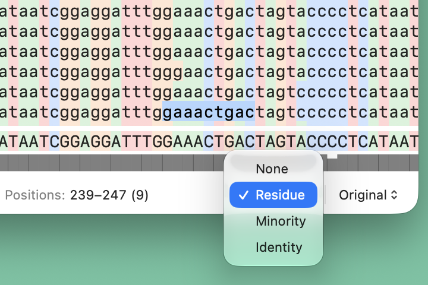
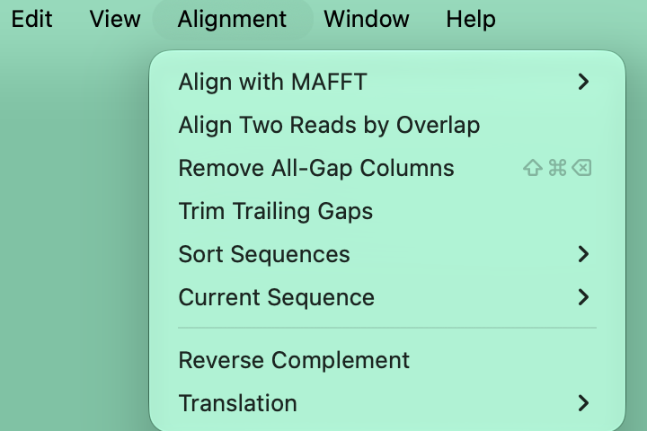
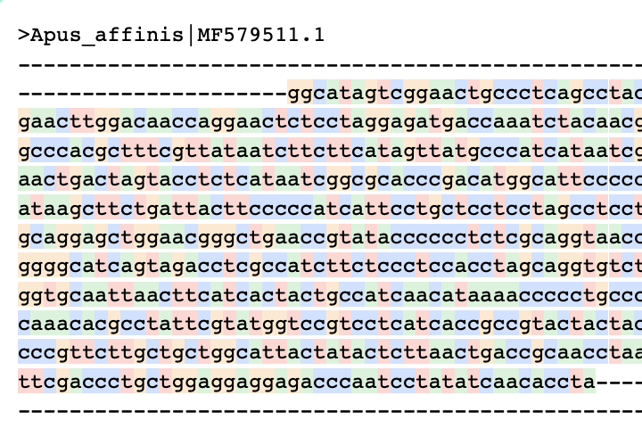

ApuSeqヘルプ
macOS用
配列アラインメントを自在に扱う
ApuSeqは、複数配列アラインメントを軽快に表示・編集できるmacOSアプリです。FASTA、CLUSTAL、CLUSTAL W、MUSCLE、およびプレーンテキストのアラインメントファイルを開き、macOS標準の操作で配列を確認・編集できます。



オープンソースライセンス
ApuSeqは複数配列アラインメントツールとしてMAFFT v7.526を同梱しています。通知は、ApuSeq > ApuSeqについてで確認できます。